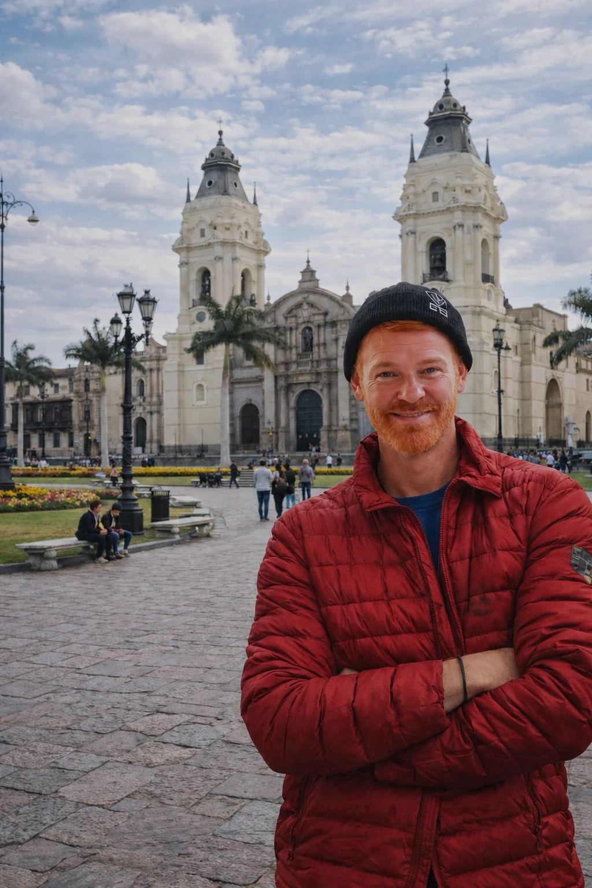
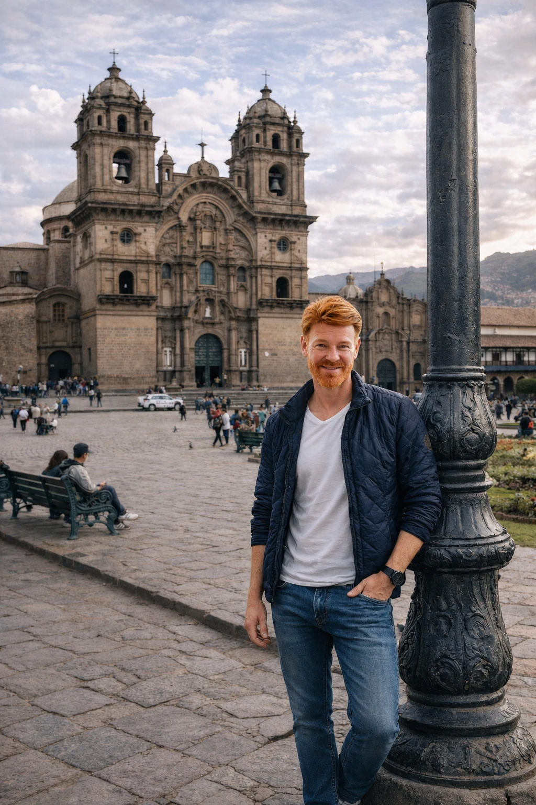
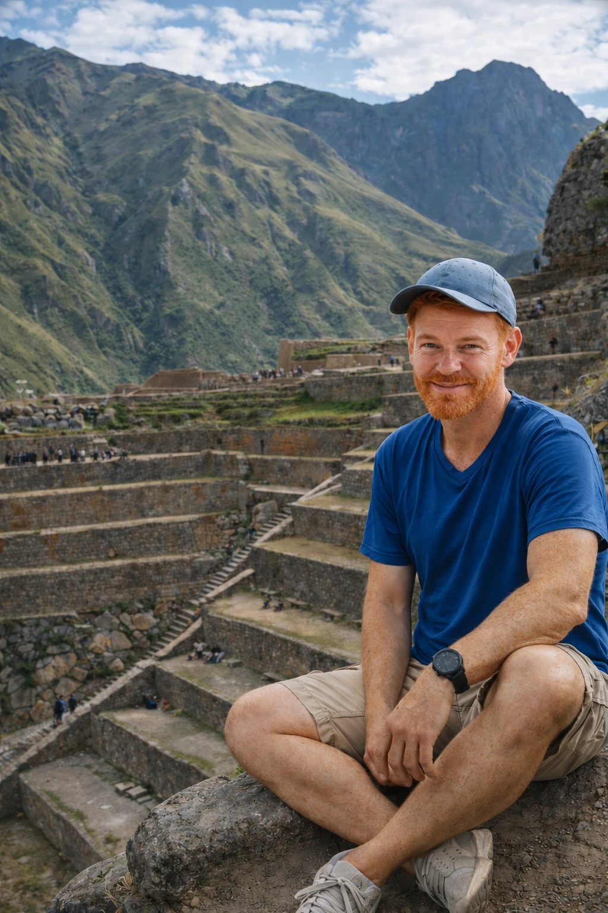
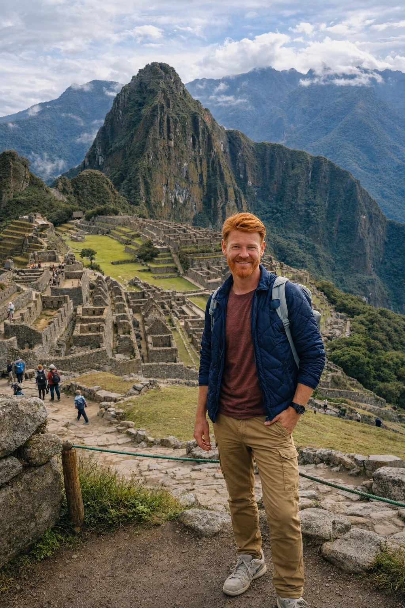

Escolha três capítulos
Lima + Cusco + Vale Sagrado/Machu Picchu, aceitando uma viagem mais compacta.
Do Pacífico aos Andes, o Peru funciona melhor quando cada capítulo prepara o seguinte. Lima abre a viagem, Cusco muda a altitude e o contexto, o Vale Sagrado desacelera o percurso e Machu Picchu fecha a narrativa.
A ordem das bases muda conforto, deslocamentos e leitura do destino. A lógica abaixo organiza a viagem do nível do mar à altitude e do contexto urbano ao trecho mais icônico.
A melhor rota evita zigue-zague desnecessário e reserva tempo para adaptação.
Lima + Cusco + Vale Sagrado/Machu Picchu, aceitando uma viagem mais compacta.
Lima + Cusco + Vale Sagrado + Machu Picchu, com uma noite real no vale.
Mais tempo em Lima ou no Vale Sagrado, noites menos operacionais e deslocamentos mais confortáveis.

Abertura urbana, bairros, gastronomia e uma chegada mais suave antes dos Andes.
Abrir Lima →
Adaptação, patrimônio e leitura histórica antes de seguir para o vale.
Abrir Cusco →
Um trecho para desacelerar, dormir no vale e transformar deslocamento em experiência.
Abrir Vale Sagrado →
Circuito e horário primeiro; trem, base e ritmo depois.
Abrir Machu Picchu →Começar por Lima cria uma entrada ao nível do mar antes da altitude. Cusco e Vale Sagrado devem conversar com o horário de Machu Picchu.
Cusco pede margem. O primeiro dia não precisa ser cheio — adaptação também faz parte do roteiro.
Dormir no vale reduz a sensação de bate-volta e cria uma transição mais elegante para Machu Picchu.
Defina ingresso, circuito e horário antes de comprar trem e ajustar a última parte da rota.
Cada guia detalha base, ritmo, logística e o que vale priorizar sem transformar a viagem em checklist.